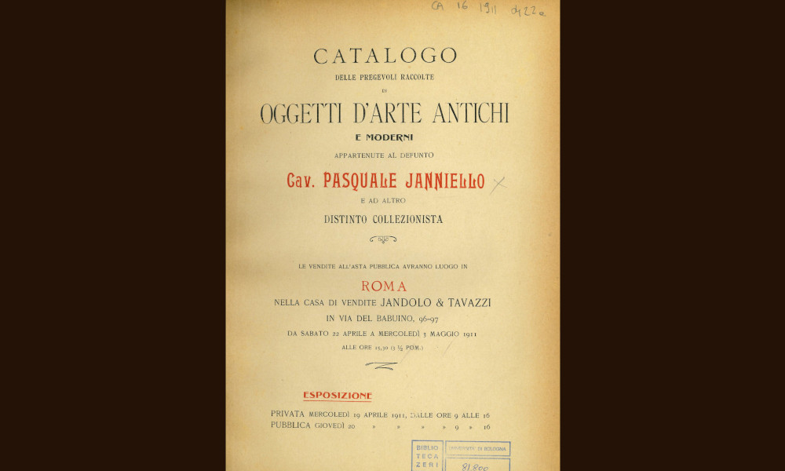

Jandolo-Tavazzi

- Dati biografici
- Albero familiare
- Luoghi
- Relazioni
- Opere trattate
A partire dai primi anni del Novecento Augusto e Salvatore Jandolo si unirono in società con Filippo Tavazzi , fondando la "Casa di vendite Jandolo & Tavazzi" documentata in via del Babuino 96, 97. I cataloghi della maison des ventes furono pubblicati dal 1907 al 1936 e descrivono alcune delle vendite italiane più importanti dell'epoca, come quelle degli antiquari Gioacchino Ferroni (1854-1909) ed Elia Volpi (1858-1938).
Il figlio di Filippo Tavazzi, Guido Tavazzi (?-1942), lavorò nella società che il padre aveva formato con gli Jandolo, svolgendo di organizzatore di aste ed esperto banditore.
Vedi le opere transitate presso l'antiquario presenti nel catalogo della Fondazione Zeri